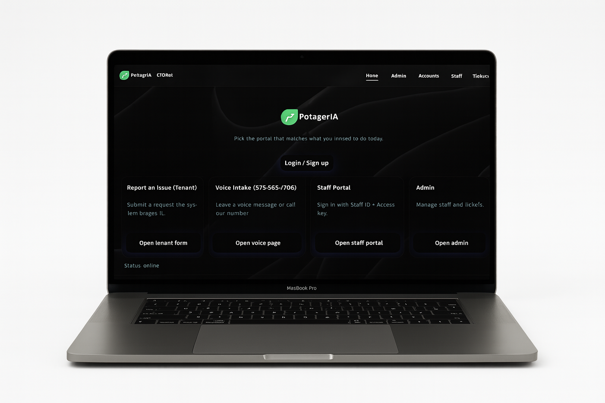
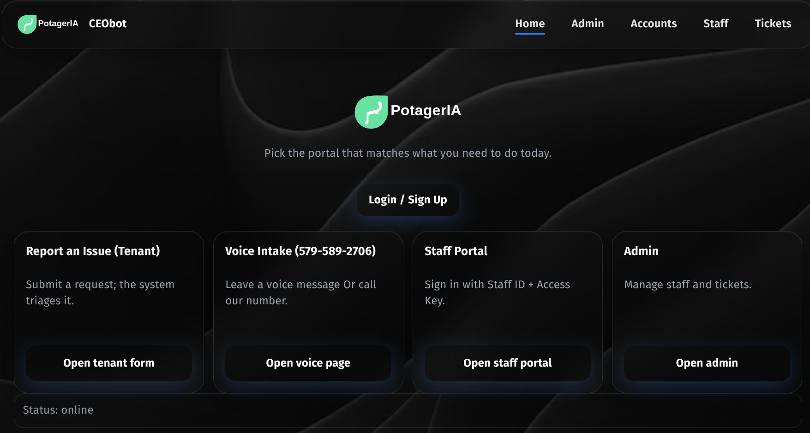
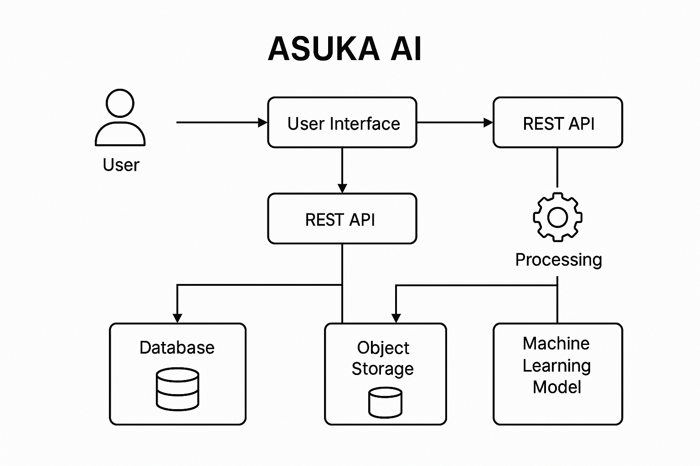
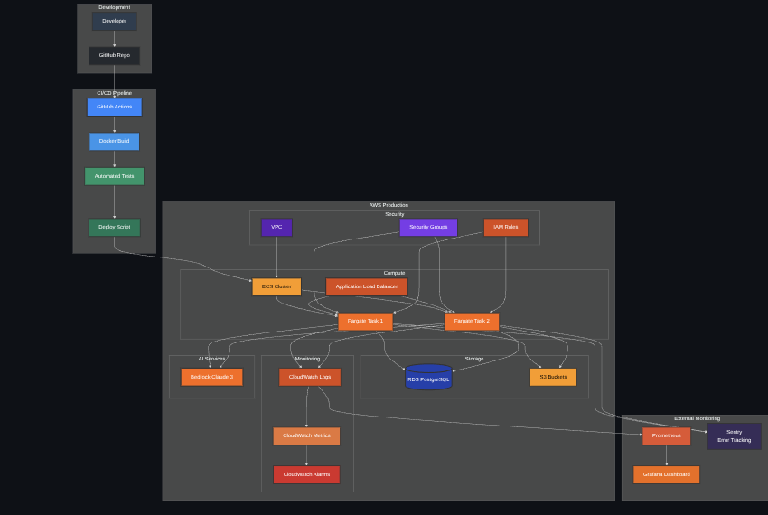

Core Languages
- C#
- Python
- Java
- JavaScript
- TypeScript
- HTML
- CSS
- Tailwind CSS
- Bash
I build intelligent systems with clean design, solid engineering, and production-ready reliability.

I’m a developer focused on building intelligent, production-ready systems that merge software engineering with artificial intelligence. My work spans full-stack web platforms and advanced AI pipelines, with a strong emphasis on automation, scalability, and real-time interaction.
I thrive at the intersection of backend architecture and applied AI — designing systems that are not only robust and secure but also adaptive and responsive to complex, real-world demands.
Core technologies and tools I’ve mastered across my projects.
Highlights spanning AI-driven workflows, polished UI, and resilient infrastructure.

AI · Automation · Voice · Ops · Infra · WebAppAI-driven property management system automating tenant requests, voice intake, and admin workflows.
View details →
AI · Game Integration · Voice · Agent · RealtimeIntelligent Minecraft companion using Grok + Coqui XTTS for live, context-aware voice interactions.
View details →
AI · DevTools · Full-Stack · Cloud · AppsFull-stack AI coding assistant built with FastAPI, React, and AWS Bedrock for live code generation and debugging.
View details →Have something in mind? I’m open to impactful collaborations.